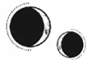

CAPÍTULO 77
Ener 1790
Helena estaba sentada en la cama contándole los deditos de los pies y de las manos a su hija, estudiando sus diminutas uñas y admirando su perfil achatado. Lila le había limpiado a conciencia el unto sebáceo que la cubría al venir al mundo y la había envuelto en una mantita con una pericia asombrosa antes de devolvérsela a su madre.
El pelo apelmazado empezaba a secársele y lo tenía de punta alrededor de la cabeza.
—Parece que el pelo lo ha heredado de mí —comentó levantando la vista con una sonrisa.
Kaine se había puesto tan lejos de ella como podía sin llegar a salir por la puerta. Helena lo miró confundida. Apenas se había apartado de su lado en las últimas semanas, pero ahora parecía sentirse acorralado.
—Kaine…, ven a verla.
—Helena… —dijo él tragando saliva.
—Es tu hija.
—Sí, lo sé —dijo apretando los dientes—. Recuerdo perfectamente cómo la concebimos.
Helena perdió súbitamente la sonrisa y bajó la vista. El silencio que se hizo en la habitación era tan ensordecedor que creyó que no volvería a oír nada más en toda su vida. Algunas heridas jamás sanaban. A veces tenía la sensación de que entre los dos sumaban una cantidad casi mortal de ellas.
—Creo que debería irme.
—Ven aquí —le dijo Helena con voz firme e inexpresiva, sin darle tiempo a que interpretara su silencio como si coincidiera con él.
Kaine exhaló y la miró desesperado, como si le estuvieran arrancando el corazón del pecho, pero no se movió.
—Kaine…, ven aquí —insistió con decisión, y él se acercó tragando saliva—. No tuvimos otra opción. Ninguno de los dos. Pero eso ya ha quedado atrás. Dijimos que empezaríamos de cero cuando escapáramos y eso es lo que vamos a hacer ahora. Ella nunca conocerá el mundo que nosotros hemos dejado atrás.
La mirada de Kaine vagó por toda la habitación con tal de no posarse en el bebé.
—No te va a hacer daño y tú a ella tampoco.
—Helena —rogó con voz estrangulada—, yo no debería disfrutar de esta vida. Paladia ha quedado manchada de toda la sangre que yo mismo he derramado. ¿Crees que no he matado a niños? Nunca he destacado en nada salvo en el asesinato. ¿De verdad quieres tener a alguien así cerca de tu hija?
Helena se quedó de piedra mientras lo miraba, pero terminó por agachar la cabeza.
—No te dieron otra opción. Además, no solo has matado a gente. Me salvaste. Salvaste a Lila y a Pol. Hicimos… hicimos lo necesario para sobrevivir, pero ahora tenemos la oportunidad de ser mejores. Por ella.
Kaine por fin apartó la vista de la pared.
Su hija dejó volar los ojillos plateados entre ellos. Su cabello por fin se había secado en una aureola de rizos oscuros. Había conseguido sacar las manitas de la manta y las tenía cerca del rostro, todavía achatado por el parto. Se estaba chupando los nudillos de la mano derecha.
Era la criatura más perfecta que Helena había visto nunca.
—Mírala. Es nuestra. Solo nuestra. Y no vas a hacerle daño.
Kaine la contempló petrificado, conteniendo el aliento. Sus dedos temblorosos sufrieron un espasmo cuando por fin se atrevió a acariciar la palma de la mano de la niña de manera casi imperceptible, como si temiera que su contacto fuera a envenenarla o a romperla. La pequeña cerró la manita diminuta en torno a su dedo.
Helena lo estudió con atención y reconoció la expresión que se adueñó poco a poco de sus facciones mientras miraba a la personita que se aferraba con tenacidad a él: una posesiva admiración.
Enid Rose Ferron fue, según Lila, el bebé más fácil de cuidar de la historia. A medida que crecía, más se parecía a Helena, salvo por los ojos, que, tanto en forma como en color, eran iguales a los de Kaine y a los de su abuela, la mujer de quien había heredado el nombre.
La pequeña dormía de maravilla y casi nunca lloraba. Se pasaba horas y horas dormida en brazos de su padre, que se lo consentía todo y más; se acurrucaba contra su pecho mientras él veía a Helena trabajar en la cocina o en el modesto laboratorio que habían preparado en uno de los anexos.
Enid hacía gala de la solemne curiosidad de un búho, pues movía la cabeza de un lado a otro y observaba a cualquiera que tuviera delante. Helena solía llevarla colgada contra su pecho, estrechando su diminuto cuerpo entre sus brazos en actitud protectora cuando las sombras crecían más de la cuenta.
En cuanto fue capaz de mantenerse erguida con seguridad, la pequeña empezó a pasar la mitad del tiempo sentada sobre los hombros de Kaine, que salía a recorrer el perímetro de la casa sin descanso para comprobar todos los edificios. También visitaban a Amaris, que vibraba de emoción al verlos, pero se quedaba quieta como una estatua cuando Enid le tiraba de las orejas y la acariciaba.
Kaine hablaba con Enid más que con cualquier otra persona, incluida Helena. Sus soliloquios no tenían fin: le hablaba de los árboles, del mar, de la marea y las lunas, de las técnicas alquímicas y las teorías sobre los sellos, del tiempo que haría… Y Enid lo escuchaba con atención; incluso se ponía nerviosa si su padre se distraía o se quedaba en silencio durante demasiado rato.
El verano siguiente, el regreso de la fase de latencia trajo consigo noticias del Norte, sobre el asedio que se estaba llevando a cabo. Estaban matando a la ciudad de hambre para que se rindiera, puesto que no había atendido a razones frente a las exigencias de la alianza.
Cuando la latencia pasó, los tres se quedaron aliviados al descubrir que ya no quedaban más incógnitas en el aire; ninguno se preguntaba si podrían o deberían hacer algo más.
Enid habría sido la niña perfecta de no haber sido por la terrible influencia de Apollo Holdfast. En cuanto la pequeña empezó a caminar, la idílica tranquilidad de la isla se esfumó para siempre. Los dos niños corrían por la casa gritando, ajenos a la forma en que sus padres se encogían o se sobresaltaban ante cualquier ruido repentino.
Gracias a Pol, Enid aprendió a trepar colinas y árboles, y a destrozarse la ropa bajando por los acantilados. Preparó tartas de barro, sopas y pociones «curativas» en los tarros que robaban de la cocina. Aprendió a pelear y a utilizar las espadas de juguete que Lila había hecho para enseñarle a su hijo los fundamentos básicos del combate.
El niño tenía intención de convertirse en un guerrero algún día y Enid no iba a ser menos. Ambos mostraban a Lila una gran estima, pues era una guerrera con una pierna metálica, la cual les resultaba mucho más interesante que las suyas de carne y hueso.
Pol también demostró desde bien pequeño una notable habilidad para la piromancia. Y, luego, Enid, para no quedarse atrás, le curó el labio a su amigo cuando se lo abrió al chocarse con una puerta. A Helena le horrorizó que su poder se manifestara tan pronto, pero Lila la tranquilizó diciéndole que su resonancia había empezado a manifestarse de manera intermitente más o menos a su misma edad.
Enid ya había aprendido a leer cuando les llegó la noticia de que Paladia por fin se había rendido. Los aliados habían entrado en la ciudad y se habían encargado de los necrómatas que quedaban, tan delgados y desnutridos que apenas opusieron resistencia. Oyeron rumores acerca de las condiciones en que lo habían encontrado todo. Los civiles estaban tan desmejorados que los soldados los confundieron con necrómatas cuando los rodearon para pedirles comida.
Según se decía, la campaña fue todo un éxito, puesto que los ejércitos aliados casi no habían sufrido bajas. El Frente de Liberación recibió un sinfín de alabanzas por haber derrocado a la tiranía de los inmarcesibles, pero leer aquellas noticias hizo que a Helena se le revolviera el estómago. Se sentía tan traicionada que le resultaba abrumador. La situación habría sido muy distinta si la comunidad internacional hubiera decidido preocuparse por la situación de Paladia antes, aunque le hubieran dedicado una décima parte de la atención que finalmente le brindaron. Pero Hevgoss y Novis habían estado más centrados en decidir quién se quedaría con Paladia cuando la guerra terminara que en ayudar. Todos los países vecinos se habían tomado su tiempo, a la espera de que la situación se volviera intolerable y tuvieran la oportunidad perfecta de conseguir una victoria fácil pero heroica.
Las terribles historias que se contaban en los periódicos, con todo lujo de detalles escabrosos, solo servían para destacar el mérito del rescate de los paladinos, no para criticar la permisividad que los países aliados habían demostrado antes de actuar.
Morrough no se encontraba ni entre los muertos ni entre los prisioneros, pues se las había arreglado para permanecer con vida en el sistema de cuevas que se extendía bajo la Academia. Tras varios intentos fallidos de llegar hasta él, el Frente de Liberación decidió dejarlo allí con la esperanza de que muriera por sí solo.
Una vez superado el capítulo de la «Liberación», los aliados pasaron a centrarse en asuntos mucho más urgentes, como hacer que Paladia volviera a ser económicamente productiva; debatir cómo debería ser en el futuro, y decidir si podía conservar su estatus de nación independiente o se convertiría en un territorio compartido entre Hevgoss y Novis.
Se esperaba que pronto comenzaran a celebrarse los primeros juicios. La comunidad internacional negó tener conocimiento alguno sobre los trabajos forzosos que se habían llevado a cabo en el Reducto ni sobre el lumitio, tan vital para la industria, que los necrómatas habían extraído en los últimos años. Sin embargo, no pudieron fingir que desconocían el programa de repoblación, así que insistieron en que, hasta donde ellos sabían, la participación había sido voluntaria.
Entre el asedio y la toma de la ciudad, Stroud desapareció.
Cuando empezaron a liberar a las mujeres encerradas en la Torre, comenzaron a surgir historias sobre el programa, sobre los abusos y las torturas que Stroud había permitido, así como sobre los niños sometidos a todo tipo de experimentos para estudiar el desarrollo de la resonancia durante la infancia. Sin embargo, los periódicos consideraron aquellas historias demasiado terroríficas como para publicarlas. El foco de atención se puso, en su mayoría, en los trabajos forzosos del Reducto, en las minas y en el hambre que había padecido la población civil.
Se hizo bastante presión para que el asunto del programa de repoblación se solucionara discretamente y se instó a las prisioneras a que pasaran página con la excusa de ahorrarles el mal trago de revivir su trauma ante los tribunales. Además, nadie esperaba que un puñado de madres solteras e histéricas ofrecieran testimonios fiables. Que se hubieran cometido semejantes atrocidades era una mancha para la identidad norteña, así que se trató la reproducción selectiva como si fuera un retorcido invento del régimen de los inmarcesibles y no una práctica asentada desde tiempo atrás en la tradición gremial.
No, a las madres se las acomodaría en conventos y a los niños en orfanatos, donde crecerían para convertirse en miembros productivos de la sociedad. Y así todo quedaría olvidado.
Kaine fue el único a quien no pareció sorprenderle cómo se desarrollaron los acontecimientos. A Helena le afectó tanto que pasó varios días en cama y Lila empezó a desaparecer y a dejar a Pol con Helena y Enid durante largos periodos de tiempo.
Una noche, después de acostar a los niños, Lila bajó a la cocina, donde Helena estaba trabajando en un proyecto de quimiatría con el que esperaba regular su ritmo cardiaco.
—Necesito hablar contigo —le dijo.
Estaba pálida como un fantasma. Desde el fin de la latencia, había pasado unos días muy callada, más retraída de lo normal. Se sentó y contempló el fuego durante un largo rato.
—Tengo que volver —añadió al final.
Helena siempre había sabido que ese día llegaría, pero el corazón le dio un vuelco igualmente. Lila no estaba hecha para una vida tranquila y no podría ser feliz en aquella isla. Si se había quedado allí tanto tiempo había sido por Pol y por Helena. Desde que habían leído aquel boletín en el barco, Helena supo que Lila lo habría dejado todo para unirse al Frente de Liberación sin pensárselo dos veces de no haber tenido que ocuparse de su hijo.
—He estado dándole vueltas durante un tiempo. No voy a permitir que hagan esto. Están llevando a cabo un borrado masivo de lo ocurrido, de todos nosotros. Van a ocultarlo porque lo único que les importa es reactivar la industria. Son como una bandada de buitres que por fin han encontrado la oportunidad de devorarlo todo, después de años viéndonos morir.
Helena suspiró.
—¿Y de qué te va a servir volver?
—Voy a matar a Morrough. Entraré ahí y acabaré con él. Después me aseguraré de que nadie se olvide de la Resistencia. —Lila tragó saliva varias veces y la cicatriz que le surcaba el rostro le retorció las facciones—. Por eso necesito que cuides a Pol por mí. Necesito aprender a luchar utilizando la vivemancia y reunir todas las armas de obsidiana que nos queden. Y también que me enseñes a construir una bomba.
—Morrough podría morir en menos de un año.
—Lo sé, pero no pienso esperar tanto. Voy a ir a por él este mismo invierno, cuando Lumitia entre en fase de latencia.
—Pero el viaje sería peligrosísimo —replicó Helena abruptamente.
—¡Tengo que ir! —exclamó Lila levantando la voz—. Mataron a mi familia, a Luc, a… a todo el mundo. No puedo contarle a Pol lo valiente y maravilloso que fue su padre sabiendo que la persona que lo asesinó sigue ahí fuera. A nadie le importa que Luc luchara y sufriera lo indecible intentando salvarnos —dijo gesticulando furiosa—, y todo porque no ganó la guerra. El mundo se olvidará de él si no regreso.
—Podrías morir y entonces dejarías huérfano a Pol.
Lila mantuvo la mirada clavada en el fuego, con una expresión tan intensa, tan llena de anhelo, que parecía estar dispuesta a meter la mano entre las llamas si eso le permitiese tocar a Luc de nuevo.
—Juré dar mi vida por proteger a Luc, pero él está muerto mientras que yo sigo aquí. He intentado vivir con ello por Pol, pero no puedo seguir así. Ya no.
Helena recopiló a regañadientes sus averiguaciones sobre la fabricación de bombas. La técnica que había utilizado para hacer estallar el laboratorio del puerto Oeste era la que más potencial tenía, sobre todo si eran capaces de encontrar las salidas de aire que mantenían las cuevas ventiladas.
Había pasado años pensando en aquel diseño y, aunque había tenido que trabajar contra reloj, improvisando y recurriendo a los materiales que tenía a mano, con tiempo y recursos, podría lograr una que fuera mucho más efectiva.
Mientras tanto, Kaine enseñó a Lila a manejarse en la vivemancia de combate. Para sorpresa de nadie, Lila había estado entrenando en secreto. Desde un punto de vista objetivo, ella era mucho mejor combatiente, pero Kaine no seguía ninguna regla. Pasaba de la vivemancia a la alquimia de combate y al combate sucio constantemente, de manera que, en cuanto Lila empezaba a sacarle ventaja, la pelea daba un giro de ciento ochenta grados. Fue un maestro implacable y demostró una rigurosidad y una impaciencia que pusieron de manifiesto lo blando que había sido con Helena. Con Lila no tuvo la misma consideración y la obligó a curtirse a base de golpes.
Helena no había sido consciente de todo el tiempo y la dedicación que Kaine había invertido en pensar cómo matar a Morrough, en idear una estrategia. Era como si hubiera pasado los años que llevaban en la isla esperando a que Lila sacara el tema. Y a lo mejor así había sido. Aunque, de haber estado en condiciones de hacerlo, Helena no dudaba de que él mismo habría querido regresar a Paladia para matar al Sumo Nigromante. No había llegado a recuperarse del todo de las torturas que sufrió y, cuando se estresaba, le temblaban las manos incluso más que a Helena.
—Deberías ponerle nombre —dijo Lila cuando Helena por fin le entregó los diseños de la bomba—. Aunque la gente piense que estás muerta, tu trabajo debería recibir el reconocimiento que merece. Luc solía decir que acabarías eclipsándonos a todos.
Helena negó con la cabeza.
—No quiero que se pregunten qué fue de mí o que se pongan a investigar sobre mi vida. No merece la pena correr ese riesgo. Tú di que te llevaste el diseño contigo al escapar y que no sabes quién es el autor o la autora.
Pol fue asimilando poco a poco que su madre se iba a marchar. Para entonces ya tenía cinco años y su cumpleaños estaba muy cerca del de Enid. Como regalo anticipado, Lila y Pol viajaron a una de las islas más grandes y regresaron con un perro pastor blanco y patilargo al que llamaron Cobalto, igual que el caballo de su padre.
—Te hará compañía y te protegerá hasta que yo vuelva —dijo Lila.
Había dejado que el tinte fuera desapareciendo con los lavados para que su pelo recuperara su rubio natural. Lo llevaba recogido en una trenza que se había asegurado con horquillas alrededor de la cabeza, porque así era como quería que Pol la recordara.
—No podré enviarte cartas, pero te mandaré algún mensaje de vez en cuando, ¿vale? Cuando veas a Lumitia en el cielo, será porque me estoy acordando de ti. Y, siempre que el sol brille, sabrás que tu padre está velando por ti mientras yo no esté aquí. —Lila tenía los ojos brillantes por las lágrimas—. Tú cuida de Enid, ¿vale? Es tu mejor amiga y tenéis que estar ahí el uno para el otro. Porque eso es lo que hacen los amigos.
El Sumo Nigromante, Morrough, el hombre que una vez fue conocido como Cetus, el alquimista del Norte, murió un día de primavera.
Según los periódicos, un equipo de élite conformado por fuerzas militares de Novis y Hevgoss, acompañado por Lila Bayard, paladina de Luc Holdfast y último miembro vivo de la Orden de la Llama Eterna, consiguió acceder al bastión subterráneo donde se escondía y utilizó una misteriosa bomba piromántica en su primer ataque.
La explosión había provocado el derrumbe de la afamada Torre de Alquimia y el equipo tuvo que abrirse camino laboriosamente entre los escombros para infiltrarse en los pasadizos subterráneos mientras se veían asolados por un ejército de necrómatas.
Muchos murieron durante el ataque. La propia Lila Bayard había estado a punto de perder la vida. El general que había dirigido el ataque ordenó que todo el mundo retrocediera, pero ella se había negado a obedecer y había entrado sola.
Los periódicos de todo el continente habían publicado una fotografía de Lila Bayard saliendo de entre los cascotes de la Torre de Alquimia, sin casco, con el rostro sucio y la armadura manchada de sangre. La terrible cicatriz que le surcaba el rostro acaparaba todas las miradas y enmarcaba una gélida mirada de triunfo mientras arrastraba los restos mutados del cadáver descompuesto de Morrough tras de sí.
Nadie se atrevió a dudar del heroísmo de Lila Bayard, pues había logrado lo que una decena de países habían sido incapaces de hacer.
Contar con un miembro vivo de la Llama Eterna que había hecho lo imposible dificultaba a las naciones aliadas considerar a Paladia como una nación fallida y necesitada de control externo. A Lila le ofrecieron todo tipo de cargos ceremoniales, pero ella los rechazó. No había regresado para gobernar, sino para asegurarse de que las vidas que habían perdido fueran recordadas. Quería que se le hiciera frente a la guerra para que una tragedia como aquella no volviera a repetirse jamás.
En ausencia de Lila, Pol y Enid se volvieron todavía más inseparables, hasta tal punto que Helena y Kaine empezaron a preocuparse.
—No va a poder soportarlo —dijo Helena mientras los dos niños corrían de una poza a otra junto a la orilla del mar—. Se parecen demasiado a nosotros. No sé si prepararla para su partida será mejor o peor para ella.
Kaine asintió mientras los niños molestaban a un cangrejo, que empezó a corretear de lado tras ellos. Enid y Pol huyeron entre tropiezos aullando de risa e intentaban tirar el uno del otro para escapar de las pinzas del animal, mientras Cobalto ladraba desenfrenadamente.
Les habían llegado noticias de que Lila iba a liderar la reconstrucción de la Academia de Alquimia para que esta volviera a abrir sus puertas. Se erigiría una nueva Torre y un nuevo edificio, pero sus esfuerzos y su limitado número de admisiones no girarían en torno a la alquimia norteña. Se habían perdido siglos de conocimiento durante la guerra y el continente necesitaba desesperadamente más alquimistas, tantos como pudieran formar. Presentarse a la certificación ya no sería un privilegio exclusivo de los alumnos de la Academia, sino que la organización quedaría en manos de organismos externos y cualquiera que hubiera superado las pruebas de nivel resonántico podría acceder a ella.
La Academia volvería a su propósito original: explorar los horizontes de la alquimia y descubrir nuevos avances.
Tras mucho debate, y a petición de Lila, se incluyó la vivemancia como un campo de estudio más. El poder de los sanadores había sido esencial para la Llama Eterna durante la guerra. Y, mientras que se había criticado y desperdiciado el potencial que albergaba su resonancia por culpa de la superstición durante años, la suya no debería ser una habilidad exclusiva de quienes estuvieran dispuestos a abusar de ella. El tratamiento discriminatorio hacia los vivemantes en Paladia les había dado la oportunidad a los inmarcesibles de reclutar a más gente sin esfuerzo. La nación tenía que evolucionar.
Tras un año y medio fuera, Lila regresó, si bien no para quedarse. Se iba a llevar a Pol a casa.
Helena había intentado hacer que cambiara de opinión, pero Lila se mantuvo firme. El hijo de Luc tenía que regresar a Paladia para ver lo que su familia había construido. El único consuelo de Helena era que Pol jamás ostentaría el papel de principado.
El mundo entero había visto a Lucien Holdfast arrastrarse ante Morrough y suplicarle que lo hiciera inmortal antes de ser ejecutado. Incluso aunque algunos defendían que lo habían obligado a hacerlo con la promesa de mostrarle clemencia al resto de la Llama Eterna, el mito que rodeaba a los Holdfast y la idea de una divinidad heredada habían pasado a la historia.
Pol regresaría a Paladia como un Holdfast, y su madre y él reconstruirían lo que siempre había sido más importante para su familia: la Academia de Alquimia.
—Vuelve conmigo, Helena —le dijo Lila a solas cuando Kaine se llevó a los niños a caminar junto a los acantilados—. Podrías encargarte del departamento de vivemancia. Piensa en lo que podrías conseguir: formalizarías las bases de un nuevo campo de estudio para la alquimia. Serías la persona idónea para ello.
—¿Y cómo lo hacemos? —preguntó ella. Era evidente que hasta ese momento Lila no se había parado a pensar en las intrigas políticas y la presión que acarrearían sus decisiones—. ¿Dejo a Enid aquí o me la llevo conmigo para tratar de limpiar el nombre de Kaine?
Lila apartó la mirada y contempló el mar.
—No vas a poder limpiárselo. Es imposible. Sé que tú lo consideras un héroe trágico, atado de pies y manos, pero ha hecho cosas horribles. La gente habla de Morrough y hacen chistes con él, pero ¿sabes de quién no se atreven nunca a bromear? Del Sumo Inquisidor. Se ponen enfermos con solo mencionarlo. Su sello y su firma aparecen en todas partes. Su participación ha sido total. No existe ni una sola actividad del régimen que Kaine no haya supervisado.
A Helena se le formó un nudo en la garganta.
—Bueno, eso es lo que tiene ser un espía cuyo objetivo es desestabilizar el sistema. Tienes que estar al tanto de todo. ¿Cómo si no habría hecho su trabajo?
Lila dejó caer los hombros. Helena entendía por qué no quería que la vieran como la única superviviente, como una heroína solitaria. En Paladia siempre estaba rodeada por una bandada de buitres a la espera de que cometiera un error, dispuestos a despedazarla, igual que le había ocurrido cuando era paladina.
Aunque sabía que Pol estaba a punto de caer también en sus garras, Lila no quería dejar atrás a su familia, pero tampoco podía ignorar su país ni su legado. Nunca había sido una de esas personas que se rinden sin luchar.
—No voy a dejar a Kaine atrás —dijo Helena tras una pausa—. Yo jamás habría sobrevivido a la guerra sin él. Siempre le fui leal a Luc y sé que quieres que Paladia lo recuerde, pero ese país tiene tanta culpa de su muerte como Morrough. No puedo volver.
Lila asintió y se dispuso a marcharse, pero se detuvo.
—Sé que te prometí que no diría nada más, pero tengo que decirte esto antes de dejarte aquí. —Lila tragó saliva y la cicatriz de su rostro se volvió más prominente, como siempre le pasaba cuando se alteraba—. Eres todo lo que me queda aparte de Pol. Sé que quieres a Kaine y que él te quiere a ti, no voy a negarlo. Pero creo que no eres consciente de lo inhumanamente frío que es con cualquiera que no seáis Enid o tú. El resto del mundo podría irse al garete y a él le daría igual. Ni siquiera se daría cuenta. ¿De verdad es eso lo que quieres?
—Ya sé cómo es —le dijo con brusquedad—. Tanto tú como yo seguimos vivas justo por eso. —Un destello de frustración surcó el rostro de Lila, que se dispuso a abrir la boca para protestar—. ¿Qué pensaste al matar a Morrough?
La chica la cerró de golpe y desvió la mirada con una creciente expresión de angustia.
—En Luc. Estaba pensando en todo lo que le hizo a Luc.
Helena se miró la mano izquierda. La capa de distorsión bajo la que había ocultado el anillo se había desgastado con el tiempo, pero ahora la muñequera que llevaba lo escondía casi por completo.
—El amor no es algo tan puro ni tan bonito como a la gente le gusta pensar. A veces es algo retorcido. Kaine y yo nos complementamos. Yo lo convertí en quien es sabiendo lo que el sello le haría si lo salvaba. Si él es un monstruo, yo soy su creadora.
Cuando Enid descubrió que Lila se iba a llevar a Pol, al principio no lo entendió, pero pronto se puso fuera de sí.
—¡No! ¡No puedes llevártelo! Pol es mío. Es mi mejor amigo. ¡No me lo puedes quitar!
En vez de dejar que Kaine o Helena trataran de consolarla, se aferró a Pol y se negó a dejarlo ir. El niño estaba evidentemente dividido, pero no soltó la mano de su madre ni por un segundo.
—Que venga con nosotros —dijo mirando a Helena con rostro serio—. Yo cuidaré de ella.
A Helena se le cerró la garganta.
—No. No, Enid tiene que quedarse aquí hasta que sea mayor —dijo intentando soltar a Enid de su amigo.
—Pero yo quiero irme con ellos —sollozó la niña al tiempo que Helena la obligaba a soltar los pantalones de Pol—. Quiero vivir en Paladia también. ¿Por qué no nos vamos todos allí?
—Lo siento, pero no podemos —se disculpó Helena, que agarró con fuerza a Enid cuando esta trató de tirarse al suelo y arrastrarse hasta Pol—. No es seguro. Por eso vivimos en esta isla, ¿te acuerdas? Porque a mamá se le acelera demasiado el corazón si viajamos demasiado. Mamá no puede ir a sitios donde el corazón le lata más deprisa de la cuenta.
—Pero Pol es mi mejor amigo. Me quedaré sola si se va.
Kaine se volvió hacia la puerta con un ataque de espasmos en las manos y se metió en la habitación de al lado un momento.
Pol soltó la mano de Lila y se acercó a Enid.
—Tienes que quedarte con tus padres, E —le dijo con voz vacilante—. Todavía no puedes venir a Paladia.
—¿Y por qué no? Tú te vas a ir.
—Ya —coincidió el niño despacio, mirándola con los ojos azules muy abiertos y pensativos. Entonces se le retorció el rostro de pena—, pero tienes que cuidar de Cobalto. La ciudad no es un buen sitio para un perro. Además, nunca hace caso cuando lo llamamos, así que podría atropellarlo algún camión.
Enid levantó la cabeza.
—¿En serio? —preguntó con voz trémula.
—Sí, y los barcos también son peligrosos, así que tendrás que cuidar bien de él por mí. Necesita salir a pasear todos los días.
Enid asintió mostrando una ferviente comprensión ante lo importante que era la tarea que le estaba asignando. Pol le pasó su correa.
Cuando Lila y Pol partieron, Enid se sentó al borde del acantilado y lloró agarrada a Cobalto.